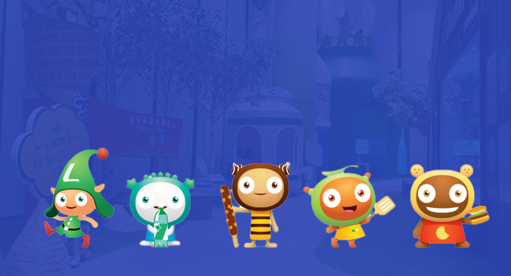
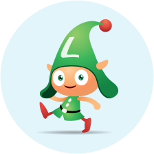
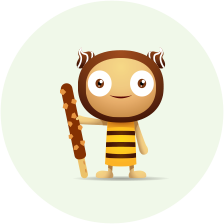
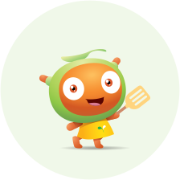
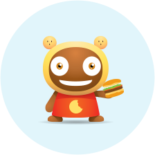

HOME > 스위트빌 > 스위트빌이야기
스위트빌이야기
캐릭터소개

- WEETY & SWEETVILL'S FRIENDS
- 맛있는 음식을 찾아 전세계를 여행하는 식도락 요정 위티
-

- 위티
- 맛있는 기운을 느낄 수 있는 특별한 능력을 가지고 있는 위티.
- 맛있는 음식을 찾아 전세계를 여행하는 식도락 요정이에요.
-

- 빼로
- 스위트빌의 초콜릿, 껌, 과자 등 달콤한 제과마을의 요정 빼로. 스위트빌에서 빼로와 함께 달콤한 초콜릿도 만들어보고 자일리톨로 뮤탄스균도 무찔러 보세요.
-
- 링크
- 스위트빌의 물, 사이다, 주스 등 건강하고 깨끗한 음료마을을 담당하고 있는 귀염둥이 링크.
- 스위트빌에서 건강한물과 사이다를 만들어 보세요.
-

- 푸디
- 스위트빌의 신선한 우유, 햄, 유산균 등 청정한 푸드농장을 책임지고 있는 푸디.
- 스위트빌에서 푸디와 함께 신선한 우유도 짜고 건강한 햄도 만들어 보세요.
-

- 로기
- 스위트빌의 햄버거, 도넛, 아이스크림 등 리아마을의 요정 로기.
- 스위트빌에서 로기와 함께 맛있는 햄버거를 만들어 보세요.
푸드송
- 바른식생활송 가사
- 깨끗이 씻고 골고루 먹고! 남기지 말고! 건강하게 자라요.
집에 돌아오면 밥 먹기 전에 뽀드득 뽀드득 손을 씻어요.
비누로 깨끗이 쓱싹쓱싹 내 손이 하얗게 반짝반짝 - 깨끗이 씻고 골고루 먹고! 남기지 말고! 건강하게 자라요.
맛있는 고기만 먹으면 안돼 푸르른 채소도 맛이 있어요.
골고루 맛있게 먹으면 쑥쑥 남김없이 먹어야 키가 커요. - 깨끗이 씻고 골고루 먹고! 남기지 말고! 건강하게 자라요.
싱싱한 음식은 냉장고에 맡겨 오래된 음식은 먹지 말아요.
올바른 식습관 함께해 봐요. 건강하고 씩씩하게 우리 모두 - 깨끗이 씻고 골고루 먹고! 남기지 말고! 건강하게 자라요.
깨끗이 씻고 골고루 먹고! 남기지 말고! 건강하게 자랄꺼예요